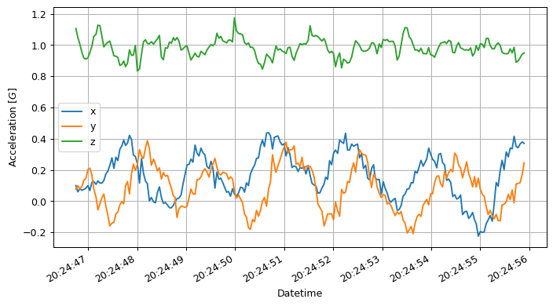
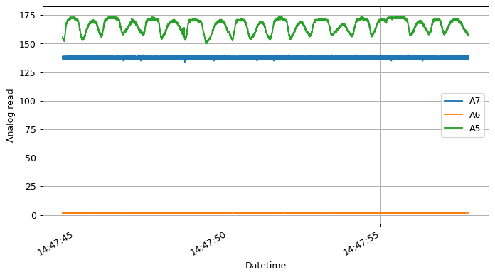
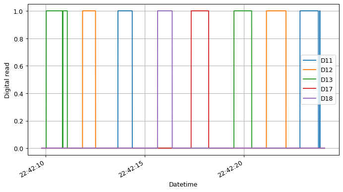
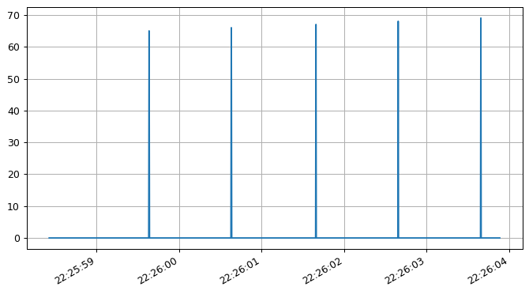

Board modes¶
With the last firmware version of OpenBCI is possibble to define custom data in the AUX bytes, this fields can be used for define external triggers, there are 5 differents modes.
Default/Accelerometer mode¶
Sends accelerometer data in AUX bytes
[6]:
from openbci_stream.acquisition import Cyton
from openbci_stream.acquisition import CytonConstants as cons
from datetime import datetime
from matplotlib import pyplot as plt
import numpy as np
openbci = Cyton('serial', capture_stream=True)
openbci.command(cons.BOARD_MODE_DEFAULT)
openbci.stream(10)
time_axis = [datetime.fromtimestamp(_) for _ in openbci.timestamp_time_series]
aux = openbci.aux_time_series
time_axis = np.array(time_axis)[~np.all(aux == 0, axis=0)]
x, y, z = aux.T[~np.all(aux.T == 0, axis=1)].T
plt.figure(figsize=(9, 5), dpi=90)
plt.subplot(111)
plt.plot(time_axis, x, label='x')
plt.plot(time_axis, y, label='y')
plt.plot(time_axis, z, label='z')
plt.xlabel('Datetime')
plt.ylabel('Acceleration [$G$]')
plt.grid(True)
plt.legend()
plt.gcf().autofmt_xdate()
plt.show()
WARNING:kafka.coordinator.consumer:group_id is None: disabling auto-commit.

Debug mode¶
Sends serial output over the external serial port which is helpful for debugging.
[7]:
from openbci_stream.acquisition import Cyton
from openbci_stream.acquisition import CytonConstants as cons
from datetime import datetime
openbci = Cyton('serial', capture_stream=True)
openbci.command(cons.BOARD_MODE_DEBUG)
openbci.stream(15)
aux = openbci.aux_time_series
print(aux)
WARNING:kafka.coordinator.consumer:group_id is None: disabling auto-commit.
[[0. 0. 0. ... 0. 0. 0.]
[0. 0. 0. ... 0. 0. 0.]
[0. 0. 0. ... 0. 0. 0.]]
Analog mode¶
Reads from analog pins A5(D11), A6(D12) and if no wifi shield is present, then A7(D13) as well.
[17]:
from openbci_stream.acquisition import Cyton
from openbci_stream.acquisition import CytonConstants as cons
from datetime import datetime
from matplotlib import pyplot as plt
import numpy as np
openbci = Cyton('serial', capture_stream=True)
openbci.command(cons.BOARD_MODE_ANALOG)
openbci.stream(15)
time_axis = [datetime.fromtimestamp(_) for _ in openbci.timestamp_time_series]
a7, a6, a5 = openbci.aux_time_series
plt.figure(figsize=(9, 5), dpi=90)
plt.subplot(111)
plt.plot(time_axis, a7, label='A7')
plt.plot(time_axis,a6, label='A6')
plt.plot(time_axis,a5, label='A5')
plt.xlabel('Datetime')
plt.ylabel('Analog read')
plt.grid(True)
plt.gcf().autofmt_xdate()
plt.legend()
plt.show()
WARNING:kafka.coordinator.consumer:group_id is None: disabling auto-commit.

Digital mode¶
Reads from analog pins D11, D12 and D17. If no wifi present then also D13 and D18.
[15]:
from openbci_stream.acquisition import Cyton
from openbci_stream.acquisition import CytonConstants as cons
import time
from datetime import datetime
from matplotlib import pyplot as plt
import numpy as np
openbci = Cyton('serial', capture_stream=True, daisy=False)
openbci.command(cons.BOARD_MODE_DIGITAL)
time.sleep(1)
openbci.stream(15)
time_axis = [datetime.fromtimestamp(_) for _ in openbci.timestamp_time_series]
d11, d12, d13, d17, d18 = openbci.aux_time_series
plt.figure(figsize=(9, 5), dpi=90)
plt.subplot(111)
plt.plot(time_axis, d11, label='D11')
plt.plot(time_axis, d12, label='D12')
plt.plot(time_axis, d13, label='D13')
plt.plot(time_axis, d17, label='D17')
plt.plot(time_axis, d18, label='D18')
plt.xlabel('Datetime')
plt.ylabel('Digital read')
plt.grid(True)
plt.legend()
plt.gcf().autofmt_xdate()
plt.show()
WARNING:kafka.coordinator.consumer:group_id is None: disabling auto-commit.

Marker mode¶
Turns accel off and injects markers into the stream by sending 'X where X is any char to add to the first AUX byte.
[20]:
from openbci_stream.acquisition import Cyton
from openbci_stream.acquisition import CytonConstants as cons
from datetime import datetime
import time
from matplotlib import pyplot as plt
openbci = Cyton('serial', capture_stream=True, daisy=False)
openbci.command(cons.BOARD_MODE_MARKER)
time.sleep(1) # some times this pause is needed for the correct command execution
openbci.start_stream()
for i in range(5):
time.sleep(1)
openbci.send_marker(65+i, 3)
time.sleep(1)
openbci.stop_stream(wait_for_no_data=True)
time_axis = [datetime.fromtimestamp(_) for _ in openbci.timestamp_time_series]
aux = openbci.aux_time_series
plt.figure(figsize=(9, 5), dpi=90)
plt.subplot(111)
plt.plot(time_axis, aux)
plt.grid(True)
plt.gcf().autofmt_xdate()
plt.show()
WARNING:kafka.coordinator.consumer:group_id is None: disabling auto-commit.

Get current mode¶
At any time is possible to get the current BOARD MODE sending a request:
[9]:
from openbci_stream.acquisition import CytonConstants as cons
openbci.command(cons.BOARD_MODE_GET)
[9]:
b'Success: digital$$$'
You can also call boardmode:
[23]:
openbci.boardmode
[23]:
'digital'